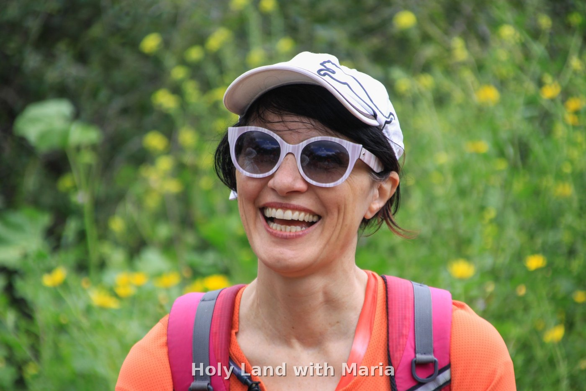

Private, personal tours through Israel's most storied places — history, faith, flavors and hidden corners, all tailored to you.

I'm a passionate, licensed tour guide who loves sharing the Holy Land's stories, flavors and hidden corners. Every tour is personal, warm and shaped around you — whether it's your first visit or you're returning to see it with new eyes.
Together we'll walk ancient streets, taste local life, and uncover the layers of history and meaning that make this land unlike anywhere else.
A few of my favorite moments and views from across the land.
Tap any tour to see a photo gallery and get in touch to book.